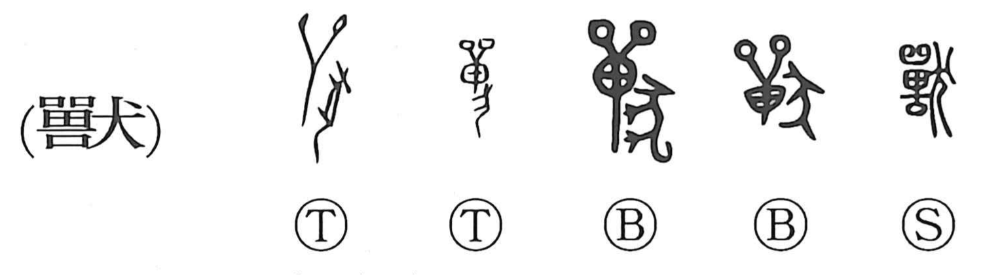

獣

Kun: kemono, kedamono | On: juu
beast ・ animal ・ prey ・ game
Explanation
獣, formerly 獸, combines 嘼 with 犬, a hunting dog. 嘼 has 單 above: an oval shield with two feather ornaments, used in the hunt. Below it is 口, a vessel containing a prayer for success before setting out. The shield and prayer together record the preparatory rite.
Adding the dog gives the hunt itself. Oracle-bone inscriptions use 獸 as a verb, asking whether hunting should take place. It is the original graph for the action later written 狩.
The meaning then shifts from hunting to the animal pursued or taken—the game or beast. 狩 keeps the verb ‘hunt,’ while 獣 becomes the familiar word for a wild animal. The ritual equipment and dog preserve the activity from which that animal-name developed.